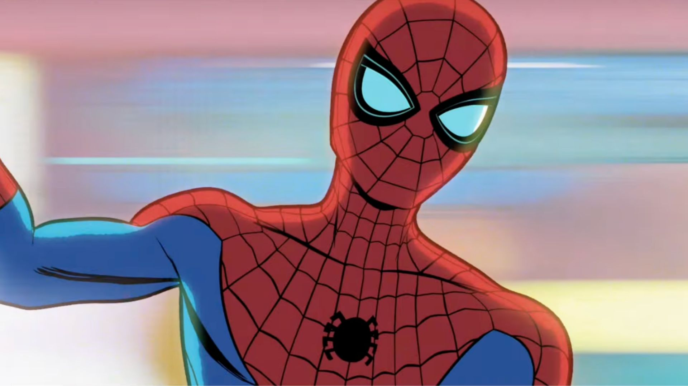

Peter Parker é um jovem órfão criado pelos tios Ben e May em Nova York. Após ser picado por uma aranha radioativa em uma feira científica, ele ganhou superpoderes. Após a morte trágica do Tio Ben por sua própria omissão, Peter aprendeu que "com grandes poderes vem grandes responsabilidades", tornando-se o herói.
Criado por Stan Lee e Steve Ditko, estreou em Amazing Fantasy #15 em agosto de 1962. Estudante tímido do Queens, lidava com bullying escolar, problemas financeiros e contas da Tia May. Trabalhou como fotógrafo freelancer para o Clarim Diário (Daily Bugle), vendendo fotos de si mesmo como Homem-Aranha para o irritado J. Jonah Jameson.
Poderes e Habilidades: Força, agilidade e reflexos sobre-humanos. "Sentido Aranha", um aviso extrassensorial que o alerta contra ameaças iminentes. Lançadores de teia artificiais criados por sua própria genialidade científica.
Post 2: Os Maiores Arqui-Inimigos
O Homem-Aranha possui uma das galerias de vilões mais icônicas dos quadrinhos. Seus três principais arqui-inimigos são o Duende Verde (Norman Osborn), o Doutor Octopus (Otto Octavius) e o Venom (Eddie Brock), que desafiam Peter Parker tanto com força física quanto com impactos emocionais profundos.
Outros vilões notáveis incluem o Sexteto Sinistro — uma equipe de supervilões formada para derrotar o Teioso —, além do Lagarto, Rino, Electro e o Rei do Crime, tornando a vida de Peter uma constante luta pela sobrevivência de Nova York.

Post 3: O Multiverso e Suas Versões
A constante evolução das histórias do Homem-Aranha trouxe o conceito do Aranhaverso, revelando que existem incontáveis versões do herói em diferentes dimensões paralelas.
Dentre as versões mais conhecidas estão Miles Morales, um jovem do Brooklyn que assume o manto do herói com habilidades uniques de invisibilidade e bioeletricidade; Gwen Stacy (Spider-Gwen); e o Homem-Aranha 2099 (Miguel O'Hara). Essa diversidade prova a mensagem central do herói: qualquer um pode usar a máscara e fazer a diferença.